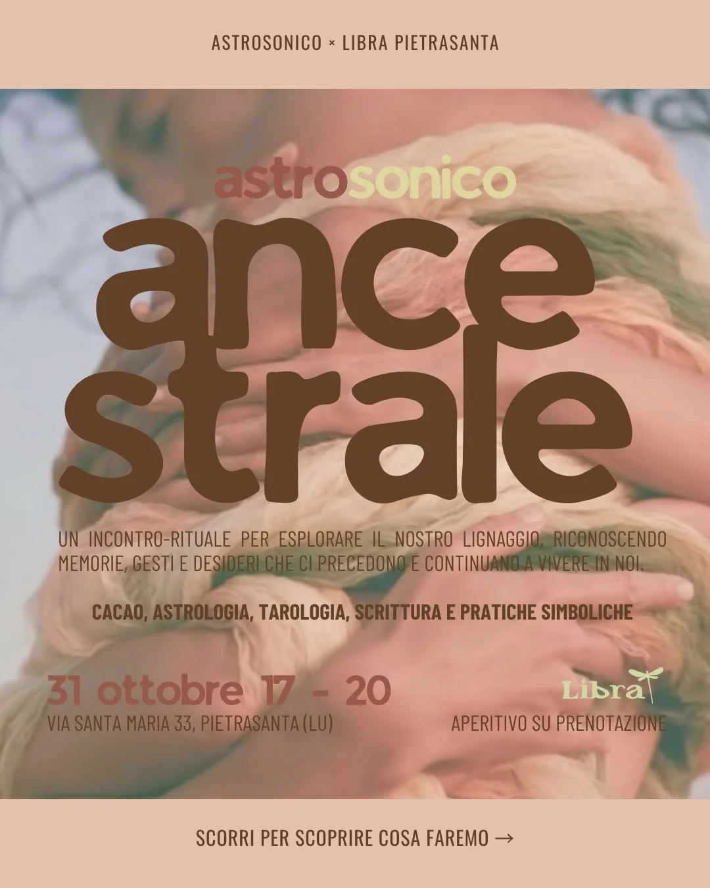
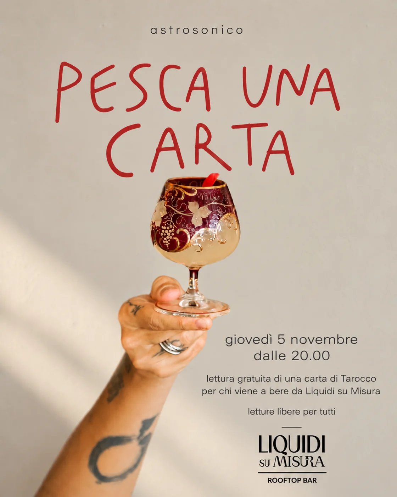

Ancestrale
Un incontro-rituale per osservare le nostre origini, riconoscere ciò che abbiamo ereditato e scegliere come stare nelle relazioni. Un cerchio intimo, tra cacao, astrologia, Tarocchi e scrittura.
Scopri Ancestrale ↗Alcune cose hanno bisogno di accadere insieme. Un cerchio, un simbolo, una carta sul tavolo. Qui trovi i prossimi incontri, i luoghi e il modo per partecipare.
Scegli ciò che desideri vivere. Alcuni incontri richiedono una prenotazione, altri ti aspettano semplicemente lì.

Un incontro-rituale per osservare le nostre origini, riconoscere ciò che abbiamo ereditato e scegliere come stare nelle relazioni. Un cerchio intimo, tra cacao, astrologia, Tarocchi e scrittura.
Scopri Ancestrale ↗
Un cocktail, una carta del Tarocco e qualche minuto con Francesca. Letture individuali del Tema Natale su appuntamento prima della serata.
Scopri la serata ↗Non tutto ciò che portiamo con noi è cominciato con noi.
Ci incontriamo a Libra, a Pietrasanta, per un pomeriggio dedicato alla nostra storia e alle radici che continuano a vivere nelle relazioni di oggi. Apriremo il cerchio condividendo il cacao: un gesto semplice per fermarci, arrivare e prepararci all'ascolto.
Attraverso astrologia, Tarocchi di Marsiglia, scrittura e pratiche simboliche, osserveremo ciò che ci ha nutrito, ciò che ha lasciato una traccia, quello che continuiamo senza accorgercene e ciò che può cambiare forma.
Un incontro di tre ore, adatto anche a chi non ha mai lavorato con questi strumenti. È un'esperienza introduttiva, distinta dal ritiro invernale RADICI di dicembre.
Un cocktail può aprire molte conversazioni. Una carta, anche quelle che non sapevi di avere.
Giovedì 5 novembre AstroSonico arriva sul rooftop di Liquidi su Misura, a Reggio Emilia. Dalle 21:00 fino alla chiusura, se vieni a bere un cocktail potrai prenderti qualche minuto con Francesca: una carta del Tarocco di Marsiglia, un'immagine da esplorare e una domanda da portare a casa.
Questo momento è gratuito e non richiede prenotazione. Si paga soltanto ciò che si consuma al bar; le letture avverranno compatibilmente con l'affluenza della serata.
Un incontro individuale in presenza, su prenotazione anticipata. Gli orari sono limitati: invia la tua preferenza e ti confermerò disponibilità e condizioni via email.
Ordina il tuo cocktail e prenditi un momento con il Tarocco insieme a Francesca. L'incontro con la carta è gratuito.